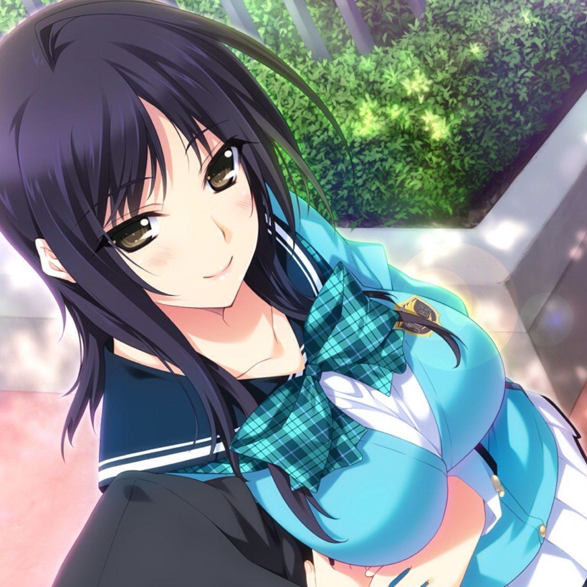

個人的推しのエロゲーヒロインランキング
1位 出水 和琴 (いずみ わこと 作品 Lovely×Cation2)

個人的1位に輝いたのはLovely×Cation2に登場する出水和琴先輩です。
前述のとおり主人公の学校の先輩にあたります。
家が神社であることから大和撫子のような、
気品のあるクールポジションのヒロインです。
容姿端麗、スポーツ万能、とありがちな学校のマドンナですが、
並みいる猛者達の告白を断ってきたことから
「学園最強の鉄壁」と呼ばれている。
主人公と付き合うことになるものの、
恋愛経験がなかったので、初々しい反応をすることも…
つまり何が言いたいかというと、めちゃくちゃかわいいってことですね。
2位 西園寺 蓉子 (さいおんじ ようこ 作品 恋はそっと咲く花のように)
個人的2位に輝いたのは恋はそっと咲く花のようにに登場する西園寺蓉子さんです。
お嬢様学校に通う3年生になります。ただ一度留年しているので主人公より1つ年上になります。
普段は主人公にちょっかいをかけるお姉さんキャラなのですが、主人公に強く迫られると
照れたり、ちゃんと乙女になることも…
ストーリーを進めていくと彼女のいろんな一面がわかってきます。
つまり何が言いたいかというと、めちゃくちゃかわいいってことですね。
3位 双葉 唯梨 (ふたば ゆいり 作品 リプキス)
個人的に3位に輝いたのはリプキスに登場する双葉唯梨ちゃんです。
いままで年上ばかりを紹介してきましたが今回は年下になります！！
この子は、割と最初の段階から主人公のことが大好きなオーラが出まくっている一途な子です。
そして意外と積極的な面もあり、主人公に猛アタックしてきます。
付き合ってからも積極的にアプローチを仕掛けてきます。
つまり何が言いたいかというと、めちゃくちゃかわいいってことですね。